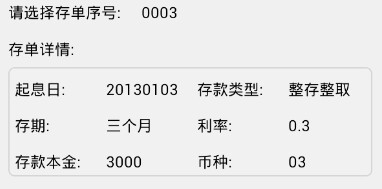

如上图中所示，用一个select控件供用户选择存单序号，当选择不同的存单序号时，表格中会显示相应的存单详情信息。类似这种，当选择不同的select的选项时，其他内容会相应发生改变的效果叫做select联动。
示例的完整代码链接为：select_inner.xml
实现select联动有三个关键步骤:
checkOption(optionName)。用户点击任意选项后，就会触发onclick事件将该选项的标识码"option1"，"option2" 或 "option3" 传给checkOption函数做判断并处理。报文代码片段如下：<select class="select_saveNum">
<option name="option1" onclick="checkOption('option1')">0001</option>
<option name="option2" onclick="checkOption('option2')">0002</option>
<option name="option3" onclick="checkOption('option3')">0003</option>
</select>
checkOption(optionName)根据用户选择的option选项值不同调用相应的函数实现功能。checkOption(optionName)函数代码片段如下:--[[判断所选存单序号]]--
function checkOption(optionName)
if optionName == "option1" then
changeDetail("option1");
elseif optionName == "option2" then
changeDetail("option2");
else
changeDetail("option3");
end
end
实现每个选项下的具体功能，即选择某个选项后的变化效果。
在示例中指changeDetail(subTableName)这个函数，该函数的功能为根据所选选项的不同获得不同的数据替换表格中的数据。代码片段如下：
--[[存储option对应的存单详细信息]]--
local detailTable =
{option1={startDate="20130101", savingType="整存整取", savingTerm="一个月", intrestRate="0.1", principalDeposit="1000", currencyType="01"},
option2={startDate="20130102", savingType="整存整取", savingTerm="两个月", intrestRate="0.2", principalDeposit="2000", currencyType="02"},
option3={startDate="20130103", savingType="整存整取", savingTerm="三个月", intrestRate="0.3", principalDeposit="3000", currencyType="03"}};
--[[改变单个控件值]]--
function changeValue(name,value)
local ctrl = document:getElementsByName(name);
if ctrl and #ctrl > 0 then
ctrl[1]:setPropertyByName("value",value);
else
window:alert(name .. "控件不存在!");
end;
end;
--[[根据所选存单序号,改变存单详情]]--
function changeDetail(subTableName)
changeValue("startDate",detailTable[subTableName]["startDate"]);
changeValue("savingType",detailTable[subTableName]["savingType"]);
changeValue("savingTerm",detailTable[subTableName]["savingTerm"]);
changeValue("intrestRate",detailTable[subTableName]["intrestRate"]);
changeValue("principalDeposit",detailTable[subTableName]["principalDeposit"]);
changeValue("currencyType",detailTable[subTableName]["currencyType"]);
end
示例中，由于不同的选项需要用到不同的数据，我们用了一个嵌套的table存储这些数据。可以看到，detailTable中包含option1，option2，option3三个子table，分别用来存储select三个选项所需的数据集，这样在调用时只用取相应子table中的字段就可以了。
在上面的方法中，我们传递一个标识码给onclick事件的响应函数以实现判断选中的option选项。除了这种方式，还可以通过直接获取select控件当前的"text"值来判断所选选项，select控件和checkOption函数的实现方法如下:
--[[判断所选存单序号]]--
function checkOption()
--获取select控件
local select_saveNum = document:getElementsByName("select_saveNum");
--获取select控件当前的text值
local optionValue = select_saveNum[1]:getPropertyByName("text");
--通过判断text值确定选中的选项
if optionValue == "0001" then
changeDetail("option1");
elseif optionValue == "0002" then
changeDetail("option2");
else
changeDetail("option3");
end
end
<select class="select_saveNum" name="select_saveNum">
<option onclick="checkOption()">0001</option>
<option onclick="checkOption()">0002</option>
<option onclick="checkOption()">0003</option>
</select>
实际项目中，数据都是保存成json格式的，我们可以将json格式的数据转换成示例中的lua table结构：
--[[json格式字符串]]--
local detailJson = [[
{"option1": {"startDate": "20130101", "savingType": "整存整取", "savingTerm": "一个月", "intrestRate": "0.1", "principalDeposit": "1000", "currencyType": "01"},
"option2": {"startDate": "20130102", "savingType": "整存整取", "savingTerm": "两个月", "intrestRate": "0.2", "principalDeposit": "2000", "currencyType": "02"},
"option3": {"startDate": "20130103", "savingType": "整存整取", "savingTerm": "三个月", "intrestRate": "0.3", "principalDeposit": "3000", "currencyType": "03"}}]];
--[[将json字符串转化成lua table]]--
local detailTable = json:objectFromJSON(detailJson);